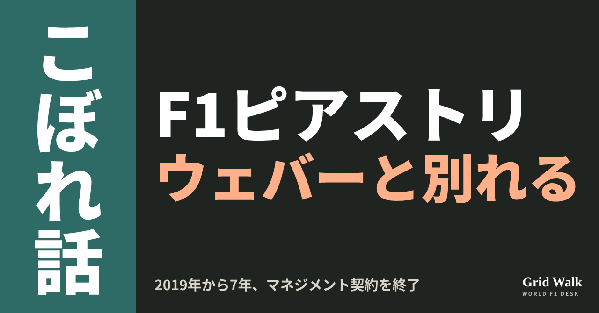
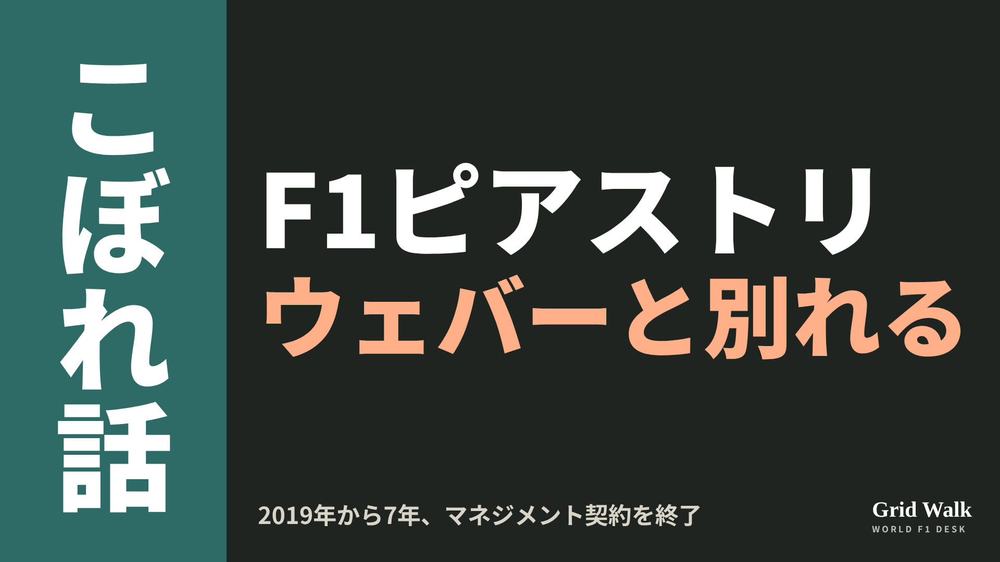
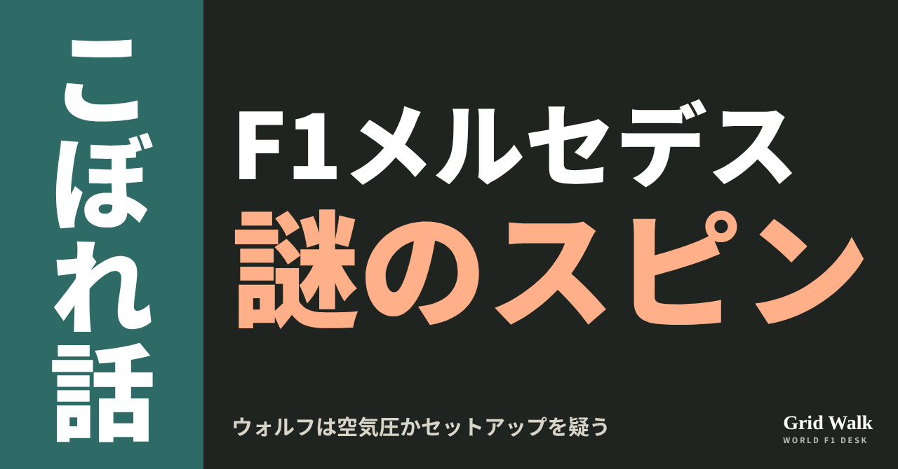
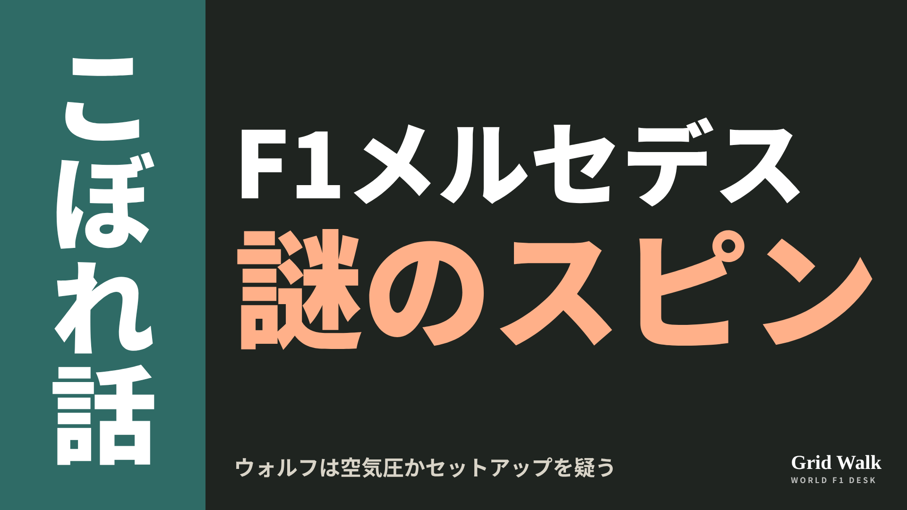
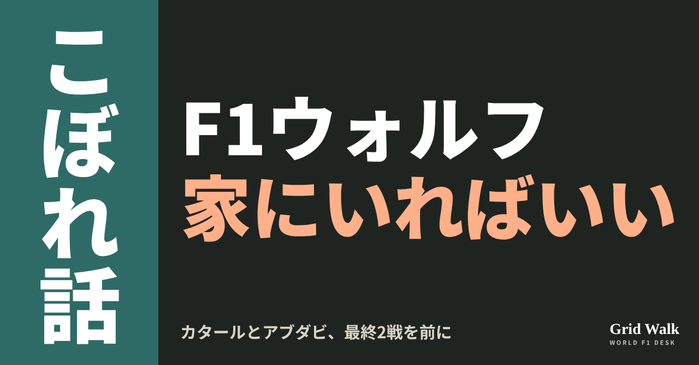
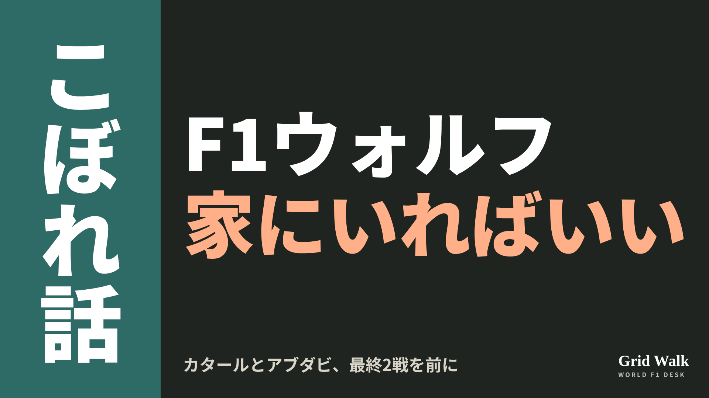
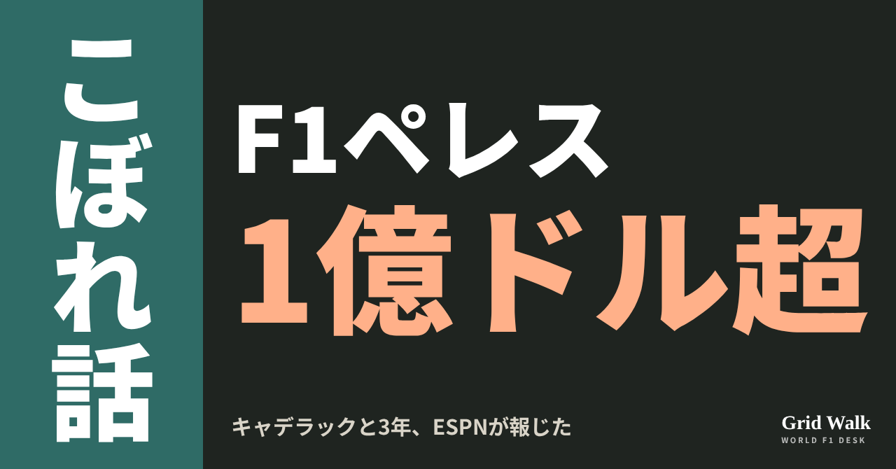
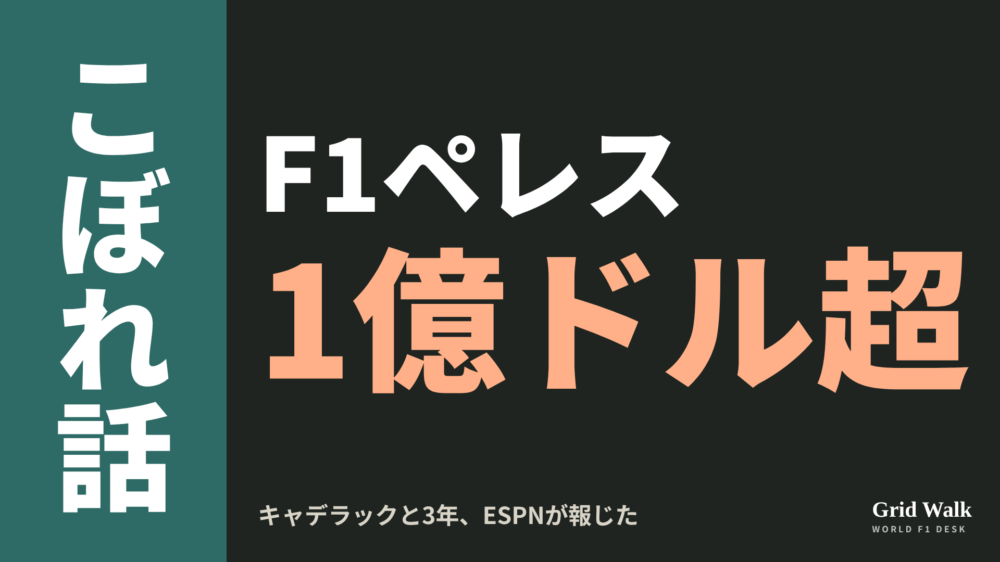

<meta charset="utf-8"><title>11/9夜のコラム note貼り付け</title>
<style>
/* one column of numbered paste steps; text steps vs image steps differ by marker */
:root{--bg:#F5F4F0;--card:#FFFFFF;--ink:#1D2321;--mute:#5F665F;--line:#DCDAD2;--btn:#1F5FBF;--btnok:#2E8B4F;--img:#E9F3EC;--imgink:#22663B;--sans:'IBM Plex Sans JP','Hiragino Sans','Noto Sans JP',sans-serif}
@media (prefers-color-scheme:dark){:root:not([data-theme="light"]){--bg:#171A19;--card:#202423;--ink:#ECEDE8;--mute:#A3AAA2;--line:#343937;--btn:#4D8BE6;--btnok:#3FA866;--img:#1E2C23;--imgink:#8FD3A6;color-scheme:dark}}
:root[data-theme="dark"]{--bg:#171A19;--card:#202423;--ink:#ECEDE8;--mute:#A3AAA2;--line:#343937;--btn:#4D8BE6;--btnok:#3FA866;--img:#1E2C23;--imgink:#8FD3A6;color-scheme:dark}
body{background:var(--bg);color:var(--ink);font-family:var(--sans);font-size:15px;line-height:1.75;padding:20px 16px 60px}
main{max-width:680px;margin:0 auto;display:grid;gap:28px}
header h1{font-size:22px;margin:0 0 6px;text-wrap:balance}
header p{margin:0;color:var(--mute);font-size:14px}
nav{display:flex;gap:8px;flex-wrap:wrap;margin-top:12px}
nav a{border:1px solid var(--line);border-radius:999px;padding:4px 14px;color:var(--ink);text-decoration:none;font-size:14px;background:var(--card)}
.part h2{font-size:18px;line-height:1.5;margin:0 0 12px;text-wrap:balance;display:flex;gap:10px;align-items:baseline;flex-wrap:wrap}
.tag{font-size:13px;background:var(--ink);color:var(--bg);border-radius:6px;padding:1px 9px}
.steps{list-style:none;margin:0;padding:0;display:grid;gap:12px}
.st{background:var(--card);border:1px solid var(--line);border-radius:12px;padding:12px;min-width:0}
.hd{display:flex;align-items:center;gap:8px;margin-bottom:8px}
.no{width:26px;height:26px;border-radius:50%;background:var(--btn);color:#fff;display:inline-flex;align-items:center;justify-content:center;font-size:13px;font-weight:700;flex:0 0 26px}
.im .no{background:var(--btnok)}
.hd em{font-style:normal;font-size:12px;background:var(--img);color:var(--imgink);border-radius:6px;padding:0 8px}
.bx{font-size:13.5px;line-height:1.7;border:1px solid var(--line);border-radius:8px;padding:8px 10px;max-height:110px;overflow:auto;overflow-wrap:anywhere}
.bx.tall{max-height:150px}.bx p{margin:0 0 6px}.bx h2{font-size:14px;margin:8px 0 4px}.bx a{color:var(--btn)}
.st img{display:block;width:100%;max-width:100%;border:1px solid var(--line);border-radius:8px}
.sub{font-size:12.5px;color:var(--mute);margin:6px 0 0}
.cp{width:100%;margin-top:8px;padding:12px;border:0;border-radius:10px;background:var(--btn);color:#fff;font:600 15px var(--sans);cursor:pointer}
.cp.ok{background:var(--btnok)}.cp.dl{background:var(--btnok)}.cp:focus-visible{outline:3px solid var(--ink);outline-offset:2px}
.xh{font-size:15px;margin:20px 0 10px}
.fb{font-size:13px;line-height:1.7;margin:8px 0 0;padding:8px 10px;border-radius:8px;background:var(--img);color:var(--imgink)}
.opts{display:grid;grid-template-columns:repeat(auto-fill,minmax(240px,1fr));gap:10px}
.opt{min-width:0}.opt img{display:block;width:100%;border:1px solid var(--line);border-radius:8px}
.ol{display:flex;align-items:center;gap:8px;margin-top:6px}.ol b{font-size:13px;flex:0 0 auto}.ol .on{font-size:12.5px;color:var(--mute);flex:1;min-width:0}.ol .cp{width:auto;flex:0 0 auto;padding:9px 14px}.ol .cp{margin:0;padding:9px}
.toast{font-size:13px;color:var(--mute);margin-top:6px}
</style>
<main><header><h1>11/9夜のコラム note貼り付け</h1><p>いま公開済みは4本です。青い番号は文章、緑は画像です。</p><nav><a href="#p1">1</a><a href="#p2">2</a><a href="#p3">3</a><a href="#p4">4</a></nav></header><section class="part" id="p1"><h2><span class="tag">OFF GRID</span>ピアストリ、ウェバーと別れる　2019年から7年の二人三脚</h2><p class="sub">サイトに公開：20:45</p><ol class="steps">
<li class="st im"><div class="hd"><span class="no">1</span><b>見出し画像</b><em>画像</em></div><button class="cp dl" data-img="img/piastri-webber-split-20261109.png" data-name="piastri-webber-split-20261109_見出し画像.png">ダウンロード</button></li>
<li class="st"><div class="hd"><span class="no">2</span><b>タイトル</b></div><div class="bx" id="p1t">ピアストリ、ウェバーと別れる　2019年から7年の二人三脚</div><button class="cp" data-plain="p1t">タイトルをコピー</button></li>
<li class="st"><div class="hd"><span class="no">3</span><b>本文</b></div><div class="bx tall" id="p1r"><p>サンパウロGPの翌日、11月9日。ピアストリが、元F1ドライバーのマーク・ウェバーとパートナーのアン・ニールが率いるマネジメントとの契約を、双方の合意で終えると発表しました。2019年から7年の関係です。2023年のマクラーレン入りを動かしたのも、ウェバーでした。</p><p>元の記事へのリンクと、ピアストリの今季の苦戦をまとめたコラムはサイトで → <a href="https://f1gridwalk.github.io/lens/piastri-webber-split-20261109/?utm_source=note&amp;utm_campaign=piastri-webber-split-20261109">https://f1gridwalk.github.io/lens/piastri-webber-split-20261109/?utm_source=note&amp;utm_campaign=piastri-webber-split-20261109</a></p><h2>「F1キャリアの始まりで、かけがえのない導き」</h2><blockquote><p>「マークとアンには、長年の支えと助言に感謝したい。ふたりの導きは、特にF1キャリアの始まりを切り抜けるうえで、かけがえのないものでした」（ピアストリ、motorsport.com／オーストラリア、The Race／イギリス）</p></blockquote><blockquote><p>「今季、サーキットでの関わりを減らしたことを受けて、いまがマネジメント契約を終えるのにふさわしい時だと、皆で合意しました。これにより、オスカーは新しいマネジメント体制のもとでこれまでの実績をさらに積み上げられ、私たちも新しい事業に乗り出せます」（ウェバー、The Race／イギリス）</p></blockquote><p>次のマネジメントがどこかは明かされていません（オランダのGPblog）。</p><h2>2023年の移籍を動かした人</h2><p>ふたりが組んだ2019年、ピアストリはフォーミュラ・ルノー・ユーロカップの王者になり、ルノーのF1育成に入りました（motorsport.com）。2020年にF3、2021年にF2と続けて王座。それでも、当時の支援元アルピーヌは2022年のF1の席を用意できませんでした（The Race）。</p><p>イギリスのThe Raceによると、アルピーヌは2シーズンほどウィリアムズへ貸し出す形を望みましたが、ウェバーは受け入れませんでした。The Raceは、アルピーヌがF1契約の扱いを誤っていて、離れる余地があるとウェバーは分かっていたと見ています。そこで推し進めたのが、ダニエル・リカルドに代わる2023年のマクラーレン入り。アルピーヌとパドックを驚かせた移籍でした。</p><p>ピアストリは1年目に表彰台、2024年に初優勝、2025年は王座にあと一歩。2025年3月のマクラーレンとの複数年の新契約も、ウェバーたちがまとめました（The Race）。</p><h2>今年は「少し一歩引くだけ」のはずが</h2><p>変化は今季の初めからでした。The Raceによると、それまでパドックでよく隣にいたウェバーたちの役割は今年「裏方」に移ったと、ピアストリはプレシーズンテストで話していました。2月のバーレーンのテストでは、こう話しています。</p><blockquote><p>「特に何かがあったわけではありません。ただ、少し違う形にしようと決めました」「マークはいまもしっかり関わっています。サーキットに来ることが前ほど多くなくなるだけです」（ピアストリ、motorsport.com／オーストラリア）</p></blockquote><p>サーキットでは、F2時代のレースエンジニアのペドロ・マトスと、メンタルコーチのエマ・マレーが支えました（motorsport.com）。</p><p>今季の形を「少し一歩引くだけ、それだけのこと」と言っていたピアストリですが、関係はここで終わりました（The Race）。マクラーレンとピアストリ陣営に深刻な緊張があったかどうかは、どちらも直接触れたことがない、とThe Raceは書いています。</p><p>ピアストリはサンパウロGPを6位で終え（F1公式の結果）、ランキングは7位。今季の苦戦はコラム（https://f1gridwalk.github.io/lens/piastri-struggles-20261030/ ）で紹介しています。編集部としては、F1への扉を開けた人と別れたあと、だれと組むのかが、来季に向けた静かな注目点だと見ています。</p><p><strong>ウェバーがいなければ、2023年のピアストリはマクラーレンにいたと思いますか？</strong></p><p>━━━━━━━━━━</p><p><strong>F1 Grid Walk では、世界のF1ニュースを毎日日本語でまとめています。</strong></p><p>海外の記事の要約を、毎日載せています。</p><p><a href="https://f1gridwalk.github.io/">https://f1gridwalk.github.io/</a></p><p>ほかの海外記事も読みたい方は、F1 Grid Walkへ。</p><p><a href="https://f1gridwalk.github.io/lens/piastri-webber-split-20261109/">https://f1gridwalk.github.io/lens/piastri-webber-split-20261109/</a></p><p>━━━━━━━━━━</p><p><a href="https://www.the-race.com/formula-1/oscar-piastri-mark-webber-f1-management-split/">出典：The Race（イギリス）</a></p><p><a href="https://au.motorsport.com/f1/news/oscar-piastri-wont-have-mark-webber-as-his-manager-anymore/10873254/">出典：motorsport.com（オーストラリア版）（オーストラリア）</a></p><p><a href="https://au.motorsport.com/f1/news/oscar-piastri-addresses-management-change-as-mark-webber-steps-back/10799231/">出典：motorsport.com（オーストラリア版）（オーストラリア）</a></p><p><a href="https://www.gpblog.com/en/breaking-news/oscar-piastri-splits-with-mark-webbers-management-team">出典：GPblog（英語版）（オランダ）</a></p><p><a href="https://www.formula1.com/en/results/2026/races/1299/brazil/race-result">出典：Formula 1 公式（イギリス）</a></p></div><button class="cp" data-rich="p1r">本文をコピー</button></li>
<li class="st"><div class="hd"><span class="no">4</span><b>ハッシュタグ</b></div><div class="bx" id="p1h">#F1 #F1jp #ピアストリ #オスカーピアストリ #マークウェバー #マクラーレン #サンパウロGP #F1こぼれ話 #OFFGRID</div><button class="cp" data-plain="p1h">タグをコピー</button></li>
</ol><h3 class="xh">X</h3><ol class="steps">
<li class="st im"><div class="hd"><b>X用の画像</b><em>画像</em></div><button class="cp dl" data-img="img/x_piastri-webber-split-20261109.png" data-name="x_piastri-webber-split-20261109.png">ダウンロード</button></li>
<li class="st"><div class="hd"><b>① noteをシェアするときの文</b></div><div class="bx" id="p1x0">ピアストリが、マーク・ウェバーらのマネジメントとの契約を終えると発表しました。2023年のマクラーレン入りを動かした人と、今季は「一歩引いた」あとの区切りです。noteにまとめました #F1jp #ピアストリ</div><button class="cp" data-plain="p1x0">コピー</button></li>
<li class="st"><div class="hd"><b>② ①への返信</b></div><div class="bx" id="p1x1">ほかの海外記事も読みたい方は、F1 Grid Walkへ。
https://f1gridwalk.github.io/lens/piastri-webber-split-20261109/?utm_source=x&amp;utm_campaign=piastri-webber-split-20261109</div><button class="cp" data-plain="p1x1">コピー</button></li>
<li class="st"><div class="hd"><b>③ ②への返信</b></div><div class="bx" id="p1x2">毎日の海外F1ニュースは、日本語でこちらにまとめています。
https://f1gridwalk.github.io/</div><button class="cp" data-plain="p1x2">コピー</button></li>
</ol></section><section class="part" id="p2"><h2><span class="tag">OFF GRID</span>メルセデス2台スピン　ウォルフ「空気圧かセットアップを間違えたと思う」</h2><p class="sub">サイトに公開：20:46</p><ol class="steps">
<li class="st im"><div class="hd"><span class="no">1</span><b>見出し画像</b><em>画像</em></div><button class="cp dl" data-img="img/mercedes-strange-spins-20261109.png" data-name="mercedes-strange-spins-20261109_見出し画像.png">ダウンロード</button></li>
<li class="st"><div class="hd"><span class="no">2</span><b>タイトル</b></div><div class="bx" id="p2t">メルセデス2台スピン　ウォルフ「空気圧かセットアップを間違えたと思う」</div><button class="cp" data-plain="p2t">タイトルをコピー</button></li>
<li class="st"><div class="hd"><span class="no">3</span><b>本文</b></div><div class="bx tall" id="p2r"><p>現地8日（日）のサンパウロGPで、メルセデスは3戦を残してコンストラクターズ王座を決めました。それでも英The Raceによると、チームの中には、勝てたはずのレースを落としたという思いが強いそうです。2台そろってのスピンのせいです。トト・ウォルフ代表がレース後に挙げたのは、タイヤでした。</p><p>元の記事へのリンクと、タイヤの空気圧のしくみを解いたDEEP GRIDへの案内はサイトで → <a href="https://f1gridwalk.github.io/lens/mercedes-strange-spins-20261109/?utm_source=note&amp;utm_campaign=mercedes-strange-spins-20261109">https://f1gridwalk.github.io/lens/mercedes-strange-spins-20261109/?utm_source=note&amp;utm_campaign=mercedes-strange-spins-20261109</a></p><h2>ピット出口と先頭で、2つのスピン</h2><p>The Raceによると、まずジョージ・ラッセルがソフトでピットを出るところでスピン。その少しあと、先頭のアンドレア・キミ・アントネッリも、ランド・ノリス（マクラーレン）に追われるなかでスピンしました。アントネッリはいったん2位まで戻しましたが、すぐにレッドブルの2台に抜かれます。</p><p>結果はラッセル4位、アントネッリ5位（F1公式）。アントネッリは危険なピットアウトで5秒を加えられましたが（FIA）、5位のままです。メルセデスが表彰台を逃したのは今季初めてです（The Race）。アントネッリも、ソフトに替えたときから車に違和感があったと話しています。本人の悔しさは、王座のコラム https://f1gridwalk.github.io/lens/mercedes-constructors-title-won-20261109/ で。</p><blockquote><p>「ジョージはピットの出口でスピンするようなドライバーではないし、キミも同じだ。2人とも、とても、とても奇妙な挙動を訴えていた。サスペンションのどこかが壊れたような、あるいはタイヤの空気圧が高すぎるような」（ウォルフ、The Race／イギリス）</p></blockquote><h2>後ろはすり減り、前は新品のよう</h2><blockquote><p>「彼らだけではなく、マックス（・フェルスタッペン）も同じことを言っていた。それでも、空気圧かセットアップで何か間違えたのだと思う。いま車を見ても、リアタイヤは完全にすり減っていて、フロントは新品のようだから」「だから、まだ見つけていない何かがある」（ウォルフ、The Race／イギリス）</p></blockquote><h2>ソフトでは速く、雨では遅く</h2><p>ラッセルは、ソフトでの速さには手応えがあったと言います。</p><blockquote><p>「ソフトタイヤでは、僕らがいちばん速いレースペースだったと言える。いちばん速いレースペースを持てたのは、かなり久しぶりだ」（ラッセル、The Race／イギリス）</p></blockquote><p>ところが終盤の雨でインターミディエイトに替えると、2人ともペースが出ません。The Raceの問いに、ラッセルはこう答えています。</p><blockquote><p>「本当に分からない」「キミも僕も、まったくペースがなかった」「小さな仮説かもしれないけど、僕らが最初にインターに替えたから、路面がいちばん乾いているときのアウトラップだけでもタイヤを傷めて、温度が上がって、悪循環に入る。いまのところ、説明はそれしかない」（ラッセル、The Race／イギリス）</p></blockquote><p>ラッセルは、ここでは「はるかに自分らしく感じられた」とも話しています。レースでアントネッリに勝ったのはバクー以来です。The Raceのデータでは、1周ごとにどちらが速かったかの割合は、52対48でアントネッリがわずかに上でした。</p><p>トラックサイド・エンジニアリング・ディレクターのアンドリュー・ショブリンは、こうまとめています。</p><blockquote><p>「4位と5位は、王座を決めるのに望んでいた形ではない。でも、やるべきことはやったし、根っこの速さには心強い兆しがあった」（ショブリン、The Race／イギリス）</p></blockquote><p>次のラスベガスは、さらに寒くなる見込みだとThe Raceは書いています。空気圧が高いタイヤが滑って熱を持つしくみは、DEEP GRID https://f1gridwalk.github.io/deep/soft-like-hard/ で取り上げました。編集部としては、ラッセルの言う温度の悪循環と、ウォルフ代表の空気圧は、どちらもタイヤの熱を指しているのかもしれないと見ています。ただ、スピンはソフト、ペースが消えたのはインターと場面は違い、答えはチームもまだ見つけていません。</p><p><strong>前は新品のようで、後ろだけがすり減ったタイヤ。もっと寒いラスベガスまでに、メルセデスは答えを見つけられると思いますか？</strong></p><p>━━━━━━━━━━</p><p><strong>F1 Grid Walk では、世界のF1ニュースを毎日日本語でまとめています。</strong></p><p>海外の記事の要約を、毎日載せています。</p><p><a href="https://f1gridwalk.github.io/">https://f1gridwalk.github.io/</a></p><p>ほかの海外記事も読みたい方は、F1 Grid Walkへ。</p><p><a href="https://f1gridwalk.github.io/lens/mercedes-strange-spins-20261109/">https://f1gridwalk.github.io/lens/mercedes-strange-spins-20261109/</a></p><p>━━━━━━━━━━</p><p><a href="https://www.the-race.com/formula-1/mercedes-trying-to-understand-strange-behaviour-amid-driver-spins/">出典：The Race（イギリス）</a></p><p><a href="https://www.formula1.com/en/results/2026/races/1299/brazil/race-result">出典：F1公式サイト（イギリス）</a></p><p><a href="https://www.fia.com/system/files/decision-document/2026_sao_paulo_grand_prix_-_infringement_-_car_12_-_unsafe_release.pdf">出典：FIA（国際）</a></p></div><button class="cp" data-rich="p2r">本文をコピー</button></li>
<li class="st"><div class="hd"><span class="no">4</span><b>ハッシュタグ</b></div><div class="bx" id="p2h">#F1 #F1jp #メルセデス #ウォルフ #ラッセル #アントネッリ #サンパウロGP #タイヤ #F1こぼれ話 #OFFGRID</div><button class="cp" data-plain="p2h">タグをコピー</button></li>
</ol><h3 class="xh">X</h3><ol class="steps">
<li class="st im"><div class="hd"><b>X用の画像</b><em>画像</em></div><button class="cp dl" data-img="img/x_mercedes-strange-spins-20261109.png" data-name="x_mercedes-strange-spins-20261109.png">ダウンロード</button></li>
<li class="st"><div class="hd"><b>① noteをシェアするときの文</b></div><div class="bx" id="p2x0">王座を決めた日に、メルセデスは2台ともスピン。ウォルフ代表は、後ろのタイヤだけがすり減り、前は新品のようだったと話し、空気圧かセットアップを疑っています。noteにまとめました #F1jp #メルセデス</div><button class="cp" data-plain="p2x0">コピー</button></li>
<li class="st"><div class="hd"><b>② ①への返信</b></div><div class="bx" id="p2x1">ほかの海外記事も読みたい方は、F1 Grid Walkへ。
https://f1gridwalk.github.io/lens/mercedes-strange-spins-20261109/?utm_source=x&amp;utm_campaign=mercedes-strange-spins-20261109</div><button class="cp" data-plain="p2x1">コピー</button></li>
<li class="st"><div class="hd"><b>③ ②への返信</b></div><div class="bx" id="p2x2">毎日の海外F1ニュースは、日本語でこちらにまとめています。
https://f1gridwalk.github.io/</div><button class="cp" data-plain="p2x2">コピー</button></li>
</ol></section><section class="part" id="p3"><h2><span class="tag">OFF GRID</span>ウォルフ「走りたくないなら家にいればいい」　中東の最終2戦を前に</h2><p class="sub">サイトに公開：20:47</p><ol class="steps">
<li class="st im"><div class="hd"><span class="no">1</span><b>見出し画像</b><em>画像</em></div><button class="cp dl" data-img="img/qatar-abu-dhabi-wolff-stay-home-20261109.png" data-name="qatar-abu-dhabi-wolff-stay-home-20261109_見出し画像.png">ダウンロード</button></li>
<li class="st"><div class="hd"><span class="no">2</span><b>タイトル</b></div><div class="bx" id="p3t">ウォルフ「走りたくないなら家にいればいい」　中東の最終2戦を前に</div><button class="cp" data-plain="p3t">タイトルをコピー</button></li>
<li class="st"><div class="hd"><span class="no">3</span><b>本文</b></div><div class="bx tall" id="p3r"><p>「走りたいなら来ればいい。走りたくないなら、家にいればいい」。メルセデスのトト・ウォルフ代表が、カタールで走るかどうかで揺れたMotoGPのライダーたちについて、こう話しました。ドイツのMotorsport-Totalが8日に伝えました。F1も11月29日にカタール、12月6日にアブダビで最後の2戦を予定しています（F1公式）。</p><p>ESPNとMotorsport-Totalの元の記事へのリンクと、関連のコラムはサイトで → <a href="https://f1gridwalk.github.io/lens/qatar-abu-dhabi-wolff-stay-home-20261109/?utm_source=note&amp;utm_campaign=qatar-abu-dhabi-wolff-stay-home-20261109">https://f1gridwalk.github.io/lens/qatar-abu-dhabi-wolff-stay-home-20261109/?utm_source=note&amp;utm_campaign=qatar-abu-dhabi-wolff-stay-home-20261109</a></p><h2>MotoGPの決勝は17人</h2><p>Motorsport-Totalによると、MotoGPでは22人のうち19人が開催に反対し、安全の保証を求めました。運営側は譲らず、報道によると、ボイコットすれば重い処分、最後の2戦の出場停止まで取り沙汰されたといいます（FIMの正式な確認はない、と同じ記事）。結局ボイコットしたのはヤマハだけ。スプリントでのけがでフランチェスコ・バニャイアも欠け、記事の時点で決勝に並ぶのは17人でした。</p><h2>「とても簡単なことだ」</h2><p>公の場で中止を求めたジャック・ミラーらについては、こうです。</p><blockquote><p>「地政学的に世界で何が起きているか分かっていないのに、聞いてくれる人たちがいるライダーが立ち上がれば、当然メディアの注目は集まる」「私もMotoGPの運営側とまったく同じようにしただろう。走りたいなら来ればいい。走りたくないなら、家にいればいい。とても簡単なことだ」（ウォルフ、Motorsport-Total／ドイツ）</p></blockquote><p>自分のチームについては、こうです。</p><blockquote><p>「うちの中では、これまで話題になっていない。でも、もし誰かがあちらへ行くことを考えて落ち着かないなら、私はそれを尊重する」「その人との関係は何も変わらない」（ウォルフ、Motorsport-Total／ドイツ）</p></blockquote><blockquote><p>「ステファノ（・ドメニカリ、F1のCEO）は動きを注意深く追っている。状況がさらに悪くなり、それに見合う知らせが届けば、彼がモハメド（・ビン・スライエム、FIA会長）と一緒に、あちらへ行く人たちを守るために真っ先に手を打つだろう。だから私は、彼らの方針にしたがう」（同）</p></blockquote><p>フェラーリのフレデリック・バスール代表も「FIAとFOM、ステファノを全面的に信頼している」と話しました（Motorsport-Total）。</p><h2>背景と、F1の静けさ</h2><p>Motorsport-Totalによると、カタールとアブダビでは4月以降、報道の範囲では、民間の施設でけが人が出るようなミサイルの着弾は記録されていません。一方、イランの革命防衛隊の影響下にあるファルス通信は、イランが米国かイスラエルにまた攻撃されたらという条件つきで、カタールとUAEのホテルを攻撃の対象になりうると名指す動画を出しました。F1とMotoGPのパドックに関わるドーハのホテルも含まれるといいます。ドイツ外務省は、UAEへの不要不急の渡航をやめるよう勧めています（正式な渡航警告ではない）。</p><p>それでもF1の声は控えめです。Motorsport-Totalは、報道によるとして、ドライバーやチームのスタッフが安全について公の場で話すのを控えるよう求められた、と伝えました。アメリカのESPNは11月2日、F1から11チームへのメッセージを見たとして、公の場で話すことやメディアの臆測に巻き込まれることに注意を促していた、と報じました（宛先はチーム）。オランダのGPblogは同じ日、出どころを示さず「チームとドライバーに」と書きました。</p><p>これまでの経緯は https://f1gridwalk.github.io/lens/motogp-middle-east-safety-20261030/ と https://f1gridwalk.github.io/lens/finale-imola-standby-20261105/ で書きました。</p><p>編集部としては、行くかどうかは一人ひとりに、開くかどうかはF1とFIAに任せる考えだと見ています。</p><p><strong>走るかどうかを一人ひとりに任せるウォルフの考えに、あなたは賛成ですか？</strong></p><p>━━━━━━━━━━</p><p><strong>F1 Grid Walk では、世界のF1ニュースを毎日日本語でまとめています。</strong></p><p>海外の記事の要約を、毎日載せています。</p><p><a href="https://f1gridwalk.github.io/">https://f1gridwalk.github.io/</a></p><p>ほかの海外記事も読みたい方は、F1 Grid Walkへ。</p><p><a href="https://f1gridwalk.github.io/lens/qatar-abu-dhabi-wolff-stay-home-20261109/">https://f1gridwalk.github.io/lens/qatar-abu-dhabi-wolff-stay-home-20261109/</a></p><p>━━━━━━━━━━</p><p><a href="https://www.motorsport-total.com/formel-1/news/toto-wolff-ueber-angst-vor-katar-wenn-du-nicht-willst-bleib-zu-hause-26110812">出典：Motorsport-Total.com（ドイツ）</a></p><p><a href="https://www.espn.com/f1/story/_/id/50320340/f1-reassures-teams-middle-east-races-go-ahead-planned-formula-1">出典：ESPN（アメリカ）</a></p><p><a href="https://www.gpblog.com/en/news/f1-asks-teams-to-stay-quiet-on-qatar-as-verstappen-and-sainz-stand-alone">出典：GPblog（オランダ）</a></p><p><a href="https://www.formula1.com/en/racing/2026">出典：Formula 1 公式（イギリス）</a></p></div><button class="cp" data-rich="p3r">本文をコピー</button></li>
<li class="st"><div class="hd"><span class="no">4</span><b>ハッシュタグ</b></div><div class="bx" id="p3h">#F1 #F1jp #ウォルフ #メルセデス #MotoGP #カタールGP #アブダビGP #サンパウロGP #F1こぼれ話 #OFFGRID</div><button class="cp" data-plain="p3h">タグをコピー</button></li>
</ol><h3 class="xh">X</h3><ol class="steps">
<li class="st im"><div class="hd"><b>X用の画像</b><em>画像</em></div><button class="cp dl" data-img="img/x_qatar-abu-dhabi-wolff-stay-home-20261109.png" data-name="x_qatar-abu-dhabi-wolff-stay-home-20261109.png">ダウンロード</button></li>
<li class="st"><div class="hd"><b>① noteをシェアするときの文</b></div><div class="bx" id="p3x0">カタールとアブダビの最終2戦を前に、ウォルフ代表は「走りたくないなら、家にいればいい」。一方で、行かない人の判断は尊重するとも。F1の声が控えめな背景もnoteにまとめました #F1jp #ウォルフ</div><button class="cp" data-plain="p3x0">コピー</button></li>
<li class="st"><div class="hd"><b>② ①への返信</b></div><div class="bx" id="p3x1">ほかの海外記事も読みたい方は、F1 Grid Walkへ。
https://f1gridwalk.github.io/lens/qatar-abu-dhabi-wolff-stay-home-20261109/?utm_source=x&amp;utm_campaign=qatar-abu-dhabi-wolff-stay-home-20261109</div><button class="cp" data-plain="p3x1">コピー</button></li>
<li class="st"><div class="hd"><b>③ ②への返信</b></div><div class="bx" id="p3x2">毎日の海外F1ニュースは、日本語でこちらにまとめています。
https://f1gridwalk.github.io/</div><button class="cp" data-plain="p3x2">コピー</button></li>
</ol></section><section class="part" id="p4"><h2><span class="tag">OFF GRID</span>ペレスは3年で1億ドル超とESPN　元ボスは「若いのを横に」</h2><p class="sub">サイトに公開：20:48</p><ol class="steps">
<li class="st im"><div class="hd"><span class="no">1</span><b>見出し画像</b><em>画像</em></div><button class="cp dl" data-img="img/perez-cadillac-salary-20261109.png" data-name="perez-cadillac-salary-20261109_見出し画像.png">ダウンロード</button></li>
<li class="st"><div class="hd"><span class="no">2</span><b>タイトル</b></div><div class="bx" id="p4t">ペレスは3年で1億ドル超とESPN　元ボスは「若いのを横に」</div><button class="cp" data-plain="p4t">タイトルをコピー</button></li>
<li class="st"><div class="hd"><span class="no">3</span><b>本文</b></div><div class="bx tall" id="p4r"><p>キャデラックのセルジオ・ペレスの新しい契約は、3年で1億ドルを超える。ESPNがそう報じたと、ドイツのMotorsport-Total.comが11月8日に伝えました。その通りなら、ペレスより稼ぐのはフェルスタッペン、ハミルトン、ノリス、アロンソ、ルクレールの5人だけ。報酬のうわさを向けられた本人は「まったく落ち着いています」と答えました。</p><p>ESPNの数字を伝えた元の記事へのリンクと、契約の年数の数え方のコラムはサイトで → <a href="https://f1gridwalk.github.io/lens/perez-cadillac-salary-20261109/?utm_source=note&amp;utm_campaign=perez-cadillac-salary-20261109">https://f1gridwalk.github.io/lens/perez-cadillac-salary-20261109/?utm_source=note&amp;utm_campaign=perez-cadillac-salary-20261109</a></p><p>Motorsport-Total.comはこの延長を3年と書いています。AP通信の2年延長と本人の「これからの3年間」の違いは、10月29日のコラムに（https://f1gridwalk.github.io/lens/perez-cadillac-2029-20261029/ ）。</p><h2>ESPNの数字、Forbesの数字</h2><p>Motorsport-Total.comによると、ESPNが伝えた1億ドル超は、基本給と成績しだいのボーナスを合わせた額で、1年にならすと3300万ドル超。F1で報酬の高い6人に入る計算です。キャデラックは金額を発表していません（要約はサイトに https://f1gridwalk.github.io/news/de-motorsporttotal-perez-cadillac-salary/ ）。</p><p>Motorsport-Total.comは比べる数字として、Forbesの2024年の推定も挙げています。それによると、この年のレッドブルでのコース上の収入は、基本給1200万ドルと成功報酬750万ドルで計1950万ドル。そのランキングで8位でした。1レースも走らなかった2025年も、2026年までの契約を早めに打ち切ったレッドブルから、残り2年分の補償が入っていました。</p><h2>本人「まったく落ち着いています」</h2><p>サンパウロGPの取材で、報酬の上位5人に入るといううわさについて聞かれたペレス（36）は、こう答えました。</p><blockquote><p>「結局のところ、キャデラックは、ドライバーがどのレベルで走っているかをよく分かっています。F1を本当に分かっている人なら、僕がいまどのレベルで走っているか、この数年どのレベルで走ってきたかを知っています」「だから一方では、まったく落ち着いています。そしてもう一方では、キャデラックも、僕が置かれている状況を完璧に分かっています」（ペレス、Motorsport-Total.com／ドイツ）</p></blockquote><p>メキシコのFox Sports Méxicoも11月6日、インテルラゴスでの同じ言葉を伝えています。</p><h2>サフナウアー「若いのを横に置けば」</h2><p>残るのは隣の席です。ボッタスの2027年はまだ確定しておらず、Motorsport-Total.comは、キャデラックが後任にハータを考えていると書いています。ハータの話は11月7日のこぼれ話に（https://f1gridwalk.github.io/lens/herta-superlicence-reached-20261107/ ）。同じ記事は、フォース・インディア時代にペレスのチーム代表だったオットマー・サフナウアーの意見を載せています。</p><blockquote><p>「チェコは、車の限界がどこにあるかを示してくれる。そして若いのを横に置けば、3年後、つまりチェコがもういないか、キャリアを終えたときに向けて、その若手の準備をもう始められるし、速さを身につけさせられる」（サフナウアー、Motorsport-Total.com／ドイツ）</p></blockquote><blockquote><p>「僕ならツォロフか、ローソンか、リンドブラッドを取る」「絶対に避けたいのは、2人のどちらも、車が本当はどれだけ良いのかを示せないことだ」（同）</p></blockquote><blockquote><p>「コルトンは適任じゃないのかもしれない。それは彼らが決めることだ。コルトンのことは好きだけど、とてつもない伸びしろのある人が要る」（同）</p></blockquote><p>ツォロフはF2を走るレッドブル育成、ローソンとリンドブラッドはレーシングブルズのドライバーです。</p><p>Motorsport-Total.comは、キャデラックでのペレスの役目を、成績でチームを引っぱるだけでなく、車の開発で経験のある物差しになることだと書いています。編集部としては、隣に経験者を置くか若手を置くかは、その物差しをどう使うかの選択になりそうだと見ています。</p><p><strong>キャデラックのペレスの隣、あなたなら経験者と若手、どちらを置きますか？</strong></p><p>━━━━━━━━━━</p><p><strong>F1 Grid Walk では、世界のF1ニュースを毎日日本語でまとめています。</strong></p><p>海外の記事の要約を、毎日載せています。</p><p><a href="https://f1gridwalk.github.io/">https://f1gridwalk.github.io/</a></p><p>ほかの海外記事も読みたい方は、F1 Grid Walkへ。</p><p><a href="https://f1gridwalk.github.io/lens/perez-cadillac-salary-20261109/">https://f1gridwalk.github.io/lens/perez-cadillac-salary-20261109/</a></p><p>━━━━━━━━━━</p><p><a href="https://www.motorsport-total.com/formel-1/news/sergio-perez-vom-abstellgleis-zu-einem-der-absoluten-topverdiener-der-formel-1-26110810">出典：Motorsport-Total.com（ドイツ）</a></p><p><a href="https://www.foxsports.com.mx/2026/11/06/checo-perez-contrato-cadillac-2029-salario-nivel-piloto-uti/">出典：Fox Sports México（メキシコ）</a></p></div><button class="cp" data-rich="p4r">本文をコピー</button></li>
<li class="st"><div class="hd"><span class="no">4</span><b>ハッシュタグ</b></div><div class="bx" id="p4h">#F1 #F1jp #セルジオペレス #キャデラック #F1年俸 #サフナウアー #サンパウロGP #F1こぼれ話 #OFFGRID</div><button class="cp" data-plain="p4h">タグをコピー</button></li>
</ol><h3 class="xh">X</h3><ol class="steps">
<li class="st im"><div class="hd"><b>X用の画像</b><em>画像</em></div><button class="cp dl" data-img="img/x_perez-cadillac-salary-20261109.png" data-name="x_perez-cadillac-salary-20261109.png">ダウンロード</button></li>
<li class="st"><div class="hd"><b>① noteをシェアするときの文</b></div><div class="bx" id="p4x0">キャデラックのペレスの新契約は3年で1億ドル超、とESPNが報じたとドイツのMotorsport-Totalが伝えました。サフナウアーは隣の席に若手を推しています。noteにまとめました #F1jp #ペレス</div><button class="cp" data-plain="p4x0">コピー</button></li>
<li class="st"><div class="hd"><b>② ①への返信</b></div><div class="bx" id="p4x1">ほかの海外記事も読みたい方は、F1 Grid Walkへ。
https://f1gridwalk.github.io/lens/perez-cadillac-salary-20261109/?utm_source=x&amp;utm_campaign=perez-cadillac-salary-20261109</div><button class="cp" data-plain="p4x1">コピー</button></li>
<li class="st"><div class="hd"><b>③ ②への返信</b></div><div class="bx" id="p4x2">毎日の海外F1ニュースは、日本語でこちらにまとめています。
https://f1gridwalk.github.io/</div><button class="cp" data-plain="p4x2">コピー</button></li>
</ol></section></main><script>
function done(b,msg){const t=b.dataset.t||b.textContent;b.dataset.t=t;b.classList.add('ok');b.textContent=msg||'コピーしました';setTimeout(()=>{b.classList.remove('ok');b.textContent=t},2000)}
function selectEl(el){const r=document.createRange();r.selectNodeContents(el);const s=getSelection();s.removeAllRanges();s.addRange(r)}
async function rich(el,b){
  try{await navigator.clipboard.write([new ClipboardItem({'text/html':new Blob([el.innerHTML],{type:'text/html'}),'text/plain':new Blob([el.innerText],{type:'text/plain'})})]);done(b);return}catch(e){}
  selectEl(el);let ok=false;try{ok=document.execCommand('copy')}catch(e){}
  if(ok){getSelection().removeAllRanges();done(b)}else{done(b,'選択しました。コピーしてください')}}
async function plain(el,b){
  try{await navigator.clipboard.writeText(el.innerText);done(b);return}catch(e){}
  selectEl(el);let ok=false;try{ok=document.execCommand('copy')}catch(e){}
  if(ok){getSelection().removeAllRanges();done(b)}else{done(b,'選択しました。コピーしてください')}}
let dlns=null;(async()=>{try{dlns=await window.claude?.use?.("downloads")}catch(e){dlns=null}})();
async function img(src,b){
  b.dataset.t=b.dataset.t||b.textContent;
  if(!dlns){try{dlns=await window.claude?.use?.("downloads")}catch(e){}}
  if(!dlns){b.textContent='ダウンロードできませんでした';setTimeout(()=>{b.textContent=b.dataset.t},3500);return}
  try{const blob=await fetch(src).then(r=>r.blob());b.textContent='保存の確認を開いています…';
    await dlns.save({filename:b.dataset.name,data:blob});done(b,'ダウンロードしました')}
  catch(e){const c=e&&e.code;b.textContent=c==='declined'?'キャンセルしました':c==='rate_limited'?'少し待ってからもう一度押してください':'ダウンロードできませんでした';setTimeout(()=>{b.textContent=b.dataset.t},3500)}}
document.querySelectorAll('.cp').forEach(b=>b.addEventListener('click',()=>{
  if(b.dataset.rich)rich(document.getElementById(b.dataset.rich),b);
  else if(b.dataset.plain)plain(document.getElementById(b.dataset.plain),b);
  else img(b.dataset.img,b)}));
</script>